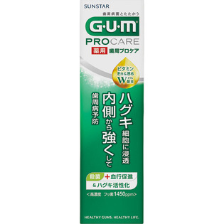
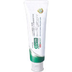

返回列表
产品名称：ガム歯周プロケア ペースト

サンスター ガム歯周プロケア ペースト ９０ｇ（医薬部外品）
メーカー サンスター
JANコード 4901616010741
商品の特徴
歯周病菌を殺菌する事に加え、ビタミンＥｎとビタミンＢ６の力でハグキを内側から強くして歯周病を予防します。
成分・分量
ガム歯周プロケアペースト
用法及び用量
【使用方法】
適量をハブラシにつけて歯や歯肉をブラッシングしてください。